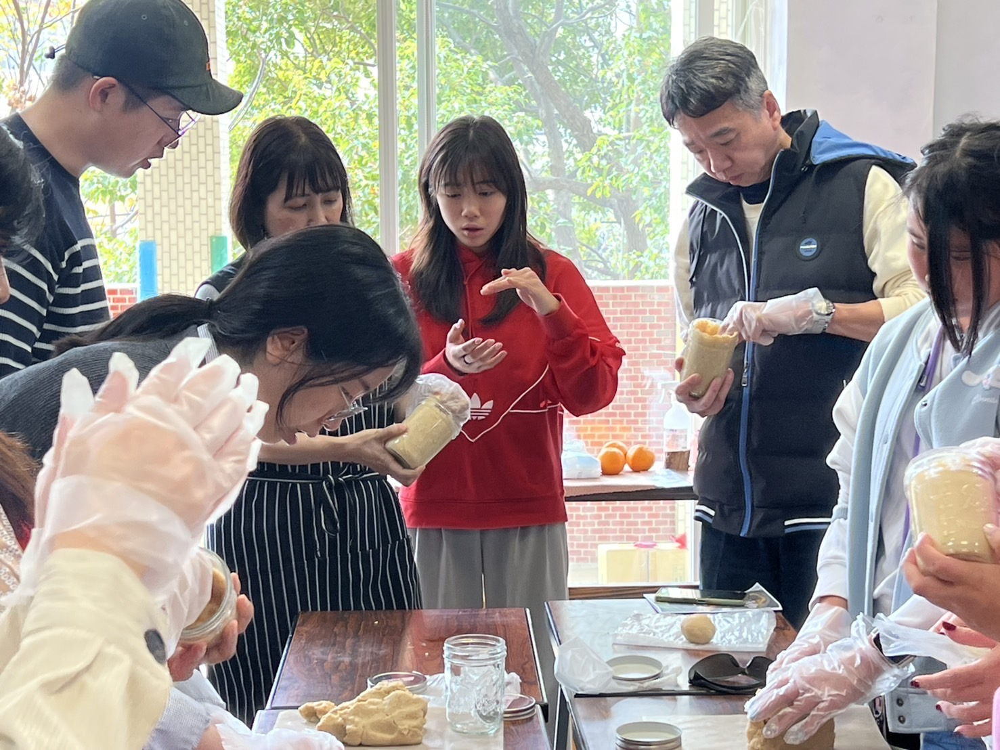
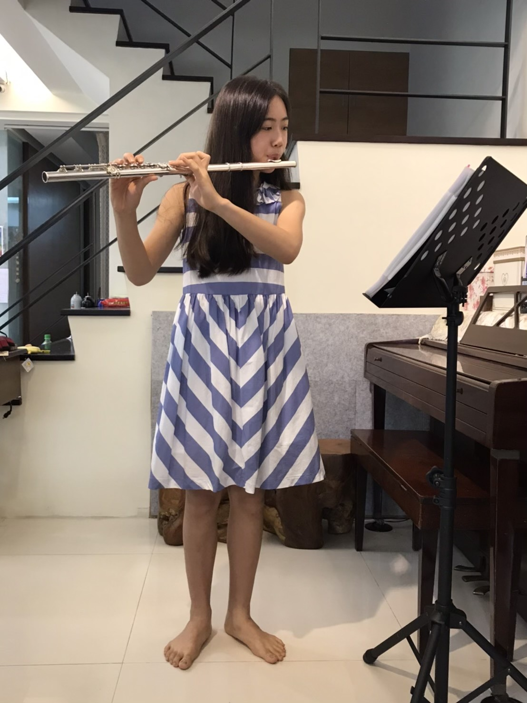
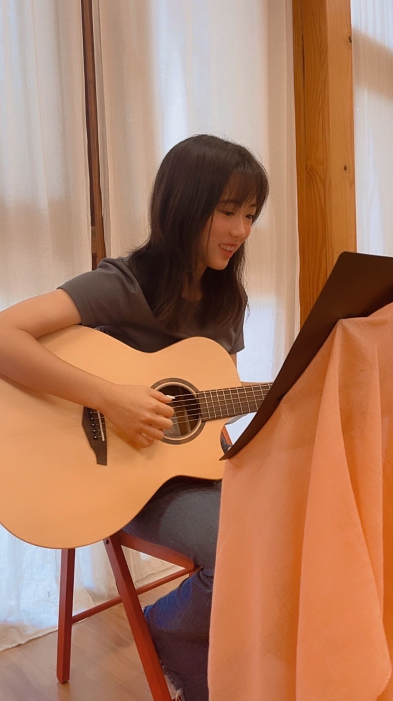
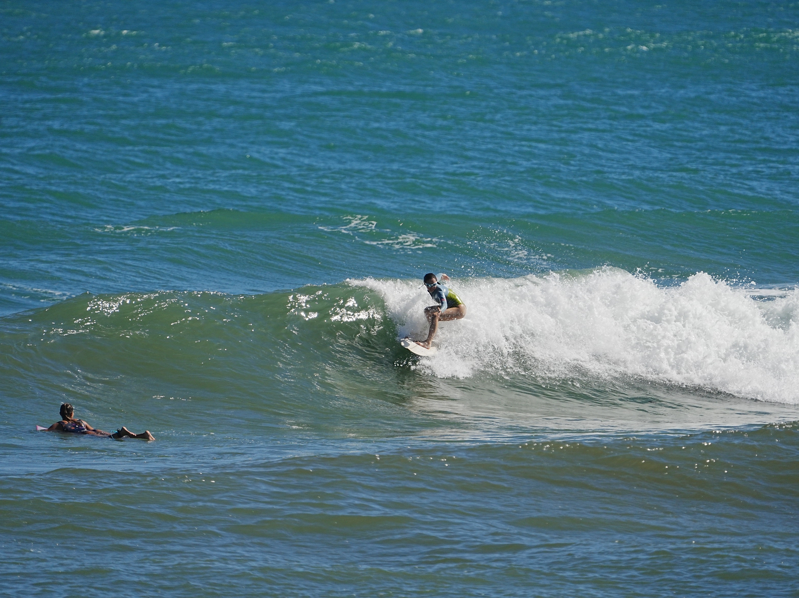
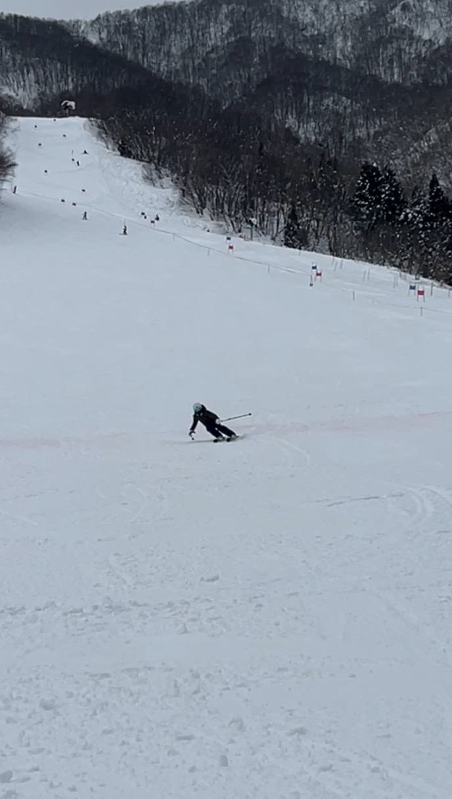

自我介紹＿

我，是個開朗的人，也是個樂觀的人，
常常都是微笑的，也總是想嘗試新奇的事物。
我，善於說話，可以把自己的立場、想法表明，
或許是因為我的樂觀，在做事時，
我是個很有行動力的人，總是一有想法就會去想辦法實踐。
雖然不是每次嘗試都會成功，但我不斷地在嘗試。
身旁的人可能會覺得我是一個負責任、對自己有要求的人，
也是個積極、理性的人，通常在群體中擔任領導者的角色。
這是我一直想要成為也一直努力朝向得更好的自己。
常常都是微笑的，也總是想嘗試新奇的事物。
我，善於說話，可以把自己的立場、想法表明，
或許是因為我的樂觀，在做事時，
我是個很有行動力的人，總是一有想法就會去想辦法實踐。
雖然不是每次嘗試都會成功，但我不斷地在嘗試。
身旁的人可能會覺得我是一個負責任、對自己有要求的人，
也是個積極、理性的人，通常在群體中擔任領導者的角色。
這是我一直想要成為也一直努力朝向得更好的自己。
我，喜歡日本，對日文、日本的文化感到有興趣。
也喜歡閱讀日本的小說、日本文學等。
在學校時也會用日文和老師聊天、對話，
在八年級時，我也與老師和同學一起到日本仙台的仙台華德福學校進行參訪。
十年級時在學校的公開活動中為日本的味噌老師和學員做過口譯，除此之外也翻譯過繪本及短篇文章。
也喜歡閱讀日本的小說、日本文學等。
在學校時也會用日文和老師聊天、對話，
在八年級時，我也與老師和同學一起到日本仙台的仙台華德福學校進行參訪。
十年級時在學校的公開活動中為日本的味噌老師和學員做過口譯，除此之外也翻譯過繪本及短篇文章。

我，喜歡音樂，享受在旋律中的自由流動與力量。
從小，我就喜歡唱唱跳跳，
小學時看到美麗的音樂老師吹奏長笛，因而心生嚮往，並且在小學三年級時開始學習長笛。
一開始主要以獨奏為主，大一點之後也參加了學校的管樂團。除了長笛之外，也在國三時開始學習吉他。
從小，我就喜歡唱唱跳跳，
小學時看到美麗的音樂老師吹奏長笛，因而心生嚮往，並且在小學三年級時開始學習長笛。
一開始主要以獨奏為主，大一點之後也參加了學校的管樂團。除了長笛之外，也在國三時開始學習吉他。


我，喜歡運動，
喜歡沈浸在熱血與速度之中。
其中，我特別喜歡衝浪和滑雪，
風從耳邊呼嘯而過的感覺，是自由。

